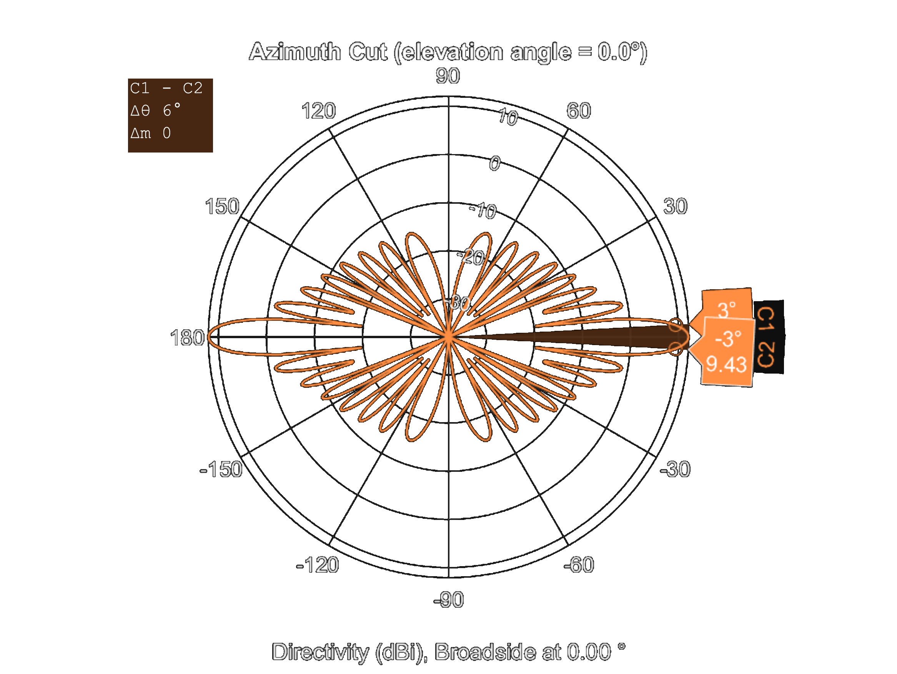

Flank Array Sonar
The most dangerous threat for submarines is torpedoes and depth charges because one hit with one of these weapons can easily sunk the submarine. These threats are mostly launched from other submarines or destroyers. Because of systems on submarine are specialized for detect, classify and track the objects without visual contact, submarines rely on their sonar arrays for detect the propeller noise of these hunters.
The submarines mainly use their bow and towed arrays for monitoring the places and track targets in the perimeter but both of them have some limitations. For example, the aperture of the bow array is limited by submarine width because it is located in front of the ship and towed array requires a winch and long tow cable which causes some installation and maneuvering problems. These disadvantages can be overcome with flank arrays. The flank array sonar is an array of hydrophones placed along the submarine hull for passive acoustic monitoring [1]. Therefore, a large aperture array can be obtained along the submarine hull with flank array. As a disadvantage, this type of array suffers from interference with submarine's self-noise [1].
Figure 1. Some sonar types and their locations on submarine [1].
In this project, a CORIS-5 flank array sonar developed by RAFAEL Company, which its’ specifications given in [1] and Table 1, will be analyzed for both an active and a passive case scenarios that two Dolphin class submarines [2] try to catch each other.
The flank arrays are mainly focused on passive acoustic monitoring so it must have omnidirectional pattern at low frequencies (<100 Hz) because of low frequencies mostly dominated with machine, propeller or flow noise. Since the array is located on the submarine, the depth is limited with submarine’s limits and the main limitation in the design of this sonar type is length of the submarine hull. Also, sampling frequency and noise filtering of the system is crucial for the task. Because in noisy environments detection of the threats will much be harder than silent waters.
The flank arrays are developed for passive monitoring but it can also detect the active sonar pings if it is in its frequency range. For active case the other submarines can be assumed as oblate spheroid for target strength calculations which is shown in Figure 2.
(a)

(b)

(c)
Figure 2. Shape of (a) oblate spheroid [3], (b) ideal streamlined hull [4] and (c) modern submarine hullform with cylindrical mid body [4].
Note that according to [2], Dolphin class submarines use FAS 3-1 flank array sonar but for this project the CORIS-5 array will be analyzed because its specifications are given more detailed in [1].
Array Structure and Directivity
First of all, using given details in [1] an identical array created in MATLAB. Visualization of the array can be found in Figure 3 (a). Firstly using MATLAB the flank arrays directivity pattern calculated and the result for frequencies from 50 Hz to 1500 Hz can be seen in Figure 3 (b).
 (a)
(a)
 (b)
(b)
Figure 3. CORIS-5 flank array sonar (a) geometry and (b) directivity pattern for frequencies up to 1500 Hz.
Beamwidth is an indication of the directivity and beamwidth practically defined as the angle difference between where the output power is 3 dB less than its maximum. Mathematically the 3-dB beamwidth can be calculated for linear arrays with (1).
\begin{equation} \theta_{3dB}=0.89 \frac{\lambda}{L} \end{equation}To calculate beamwidth of CORIS-5 manually and compare with MATLAB results, we need to define total length of array \(L\) and wavelength \(\lambda\). The total length of the array \(L\) is 23.5 m because in [1] the CORIS-5 flank array sonar consists 48 elements with equally 0.5 m spacing. Note that Dolphin class submarine has a 57.3 m hull and when the Figure 1 examined the length of the array is consistent. According to Nyquist’s Theorem the array can only work on frequencies less than 2560 Hz since the sampling frequency of system is 5120 Hz.
\begin{equation} c=\lambda f \end{equation}Using the expression (2) and speed of sound at medium c equals to 1500 m/s, the wavelength λ can be evaluated. After that using the wavelength and array length, the beamwidth of the array can be determined with the expression (1). The beamwidths calculated for different center frequencies and result are given at Table 2. Additionally, the MATLAB phased array toolbox the directivity pattern plots can be seen in Figure 4 for verification.
!!!!!TABLE!!!!!(a)

(b)
(c)

(d)
Figure 4 shows that for low frequencies the array has wider beamwidth. Since the flank array designed for passively observe propeller noise the result is consistent. Furthermore, when Figure 4 is examined in detail, it is observed that the pattern is almost omnidirectional for low frequencies if a null at approximately 40 degrees is ignored.
Limit Distance
Limit distance is practically defined as the distance the when transmission loss caused by absorption reaches to 10 dB and the absorption loss,
\begin{equation} TL_{absorp}=\alpha r \end{equation}where \(\alpha\) equals,
\begin{equation} \alpha=\alpha_2 + \alpha_3 + \alpha_4 \end{equation} \begin{equation} \alpha_2 = 2.94 \; 10^{-2} \frac{f^2}{f_3} \end{equation} \begin{equation} \alpha_3 = 2.03 \; 10^{-2} S(1-6.54 \; 10^{-4} \; P) \frac{f_3 \, (f/f_3)^2}{1+(f/f_3)^2} \end{equation} \begin{equation} \alpha_4 = 1.1 \; 10^{-1} \frac{f_4 \, (f/f_4)^2}{1+(f/f_4)^2} \end{equation}In the expressions above, \(S\) is the salinity in °/00, \(P\) is the pressure in atmosphere and \(f_n\) is the relaxation frequency. The relaxation frequency (\(f_n\)) values are dependent to relaxation time (\(\tau\)) or concentration of Boron and Magnesium Sulfate in the water. The calculation of relaxation time is given in (9) and (10).
\begin{equation} f_n= \frac{1}{2\pi \tau_n} \end{equation} \begin{equation} \tau_3 = 7.27 \; 10^{-12} \: e^{\frac{3500}{T+273}} \end{equation} \begin{equation} \tau_4 = 5.15 \; 10^{-7} \: e^{\frac{1590}{T+273}} \end{equation}During the calculations, salinity, temperature and depth are selected 36.5 \(^\circ\)/00, 20 \(^\circ\)C and 125 m respectively assuming the submarine at North Atlantic waters and compatible with dive limit of the submarine [2]. By using Figure 5 (b) and (11) the pressure at 125m,
\begin{equation} P=h \rho g = 125 \; 1026 \, \frac{9.81}{101325} = \; 12.4168 \, atm \end{equation}(b)
As a result, the limit distance calculated as 11644.33 km for 100 Hz center frequency and 172.75 km for 1 kHz. Since at 100 Hz the limit distance long enough transmission loss plotted for only 1 kHz in Figure 7.
!!!!!TEXTBOX!!!!!Figure 7. Transmission loss respect to the range.
Sonar Eqauation
The sonars can work at two different modes. One of them is passive case where hydrophone array only listens its surroundings. The other is active sonar case where a ping sent by a transducer and array receives the signal reflected from objects and/or environment. These operating modes are shown in Figure 8.
 (a)
(a)

(b)
Passive Case
In passive case, the hydrophones on the array only observes the environmental acoustic sources. Detection capability of sonar is directly dependent the acoustic wave emission of source because only information related with target is carried by signal of the source. The passive sonar equation,
\begin{equation} SL-TL-(NL-DI)>DT \end{equation}where SL is source level, TL is transmission loss, NL is noise level, DI is directivity index and DT is the detection threshold. Since the scenario is related with detection of a submarine, source level is the propeller or machine noise emitted from the target submarine. Using the Figure 9 (a), the source level considered as 20 dB, that is, the submarine is patrolling without cavitation and the noise level assumed as 51 dB by using Figure 10 and linear extrapolation to the 100 Hz for sea state 2 at Beaufort scale.
(b)
Figure 10. Noise spectrum level respect to the frequency [8].
In water, the transmission loss caused by both absorption of minerals and spreading of the acoustic wave and total transmission loss can be expressed with (13).
\begin{equation} TL=TL_{absorp}+TL_{spread}=\alpha r+20 \, log\,r \end{equation}Directivity index is equal to array gain for isotropic cases and the array gain,
\begin{equation} DI=AG=10 \, log{\frac{2L}{\lambda}} \end{equation}Using the (13) and (14) and assumptions above, relation between maximum detectable range and detection threshold shown in Figure 11 for 100, 500, 900 and 1300 Hz operating frequencies.

Figure 11. Maximum detectable range for different detection thresholds.
Active Case
In active case, one of arrays or a transducer on the submarine generates a signal which is called ping and this signal reflects from all surfaces in the water. The submarine can detect threats by observing the returned power with flank array sonar. Only difference from passive sonar equation (12) is the target strength and doubled transmission loss. The active sonar equation,
\begin{equation} SL-2\,TL+TS-(NL-DI)>DT \end{equation}The transmission loss multiplied with two because the path is doubled. The signal first goes to target after transmitted and when reaches to target reflects back to the source. Since target is assumed as an oblate spheroid shaped Dolphin class submarine in this scenario the target strength,
\begin{equation} TS=20 \, log \frac{D^2}{4lr_0} = 20 \, log \frac{57.3^2}{4 \times 3.41 \times 1} = 41.63 \, dB \end{equation}where D is the length, l is the width of submarine and r_0 is the reference distance. Using the same assumptions for noise level, directivity index and transmission loss in passive sonar case and source level is considered as 150 dB, maximum detectable ranges are calculated for different detection thresholds. Results are shown in Figure 12.

Figure 11. Maximum detectable range for different detection thresholds.
Discussion
The CORIS-5 flank array sonar has wider beamwidth, almost omnidirectional, for frequencies less than 100 Hz and for same frequency band the limit distance is long enough (>10000 km). Approximately 90-100 dB detection threshold selection is sufficient for detecting active sonar pings with this array under oblate spheroid shaped Dolphin class submarine with flash aspect target assumption but for passive acoustic observing even with normal sea state detecting machine or propeller driven noise requires very low detection threshold. The low detection thresholds such as below the 0 dB can result with higher false alarm rates.
In conclusion the CORIS-5 array is suitable for acoustic monitoring for low frequency sources because of its directivity pattern and due to low transmission losses at these frequencies so it can detect objects at far distances.
References
- [1] L. Qihu, Digital Sonar Design in Underwater Acoustics, Beijing: Springer-Verlag Berlin Heidelberg, 2012, pp. 543-552.
- [2] "Naval Technology," Verdict Media Limited, [Online]. Available: https://www.naval-technology.com/projects/dolphin/. [Accessed 4 July 2020].
- [3] Tomruen, "Wikipedia," 28 February 2017. [Online]. Available: https://commons.wikimedia.org/wiki/File:Spheroids.svg. [Accessed 4 July 2020].
- [4] S. Chakraborty, "Marine Insight," 25 October 2019. [Online]. Available: https://www.marineinsight.com/naval-architecture/introduction-to-submarine-design/. [Accessed 4 July 2020].
- [5] "National Weather Service," [Online]. Available: https://www.weather.gov/jetstream/seawater. [Accessed 28 May 2020].
- [6] "Windows to the Universe," [Online]. Available: https://www.windows2universe.org/earth/Water/density.html. [Accessed 28 May 2020].
- [7] E. Miasnikov, "Federation of American Scientists," [Online]. Available: https://fas.org/spp/eprint/snf03221.htm.
- [8] R. J. Urick, Ambient Noise in the Sea, Washington DC: Undersea Warfare Technology Office Naval Sea Systems Command Department of the Navy, 1984, pp. 2.27 - 2.29.